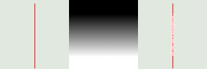
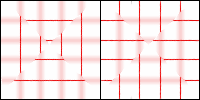
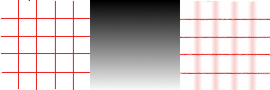
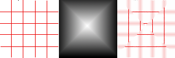
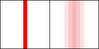
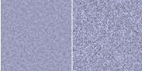
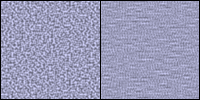
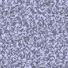

Figure 17.245. From left to right: original image, map, resulting image

Map has three stripes: a solid black area, a vertical gradient area, a solid white area. One can see, on the resulting image, that image zones corresponding to solid areas of the map, are not blurred. Only the image zone corresponding to the gradient area of the map is blurred.
“LIC” stands for Line Integral Convolution, a mathematical method. This filter is used to apply a directional blur to an image, or to create textures. It could be called “Astigmatism” as it blurs certain directions in the image.
It uses a blur map. Unlike other maps, this filter doesn't use gray levels of this blur map. Filter takes in account only gradient direction(s). Image pixels corresponding to solid areas of the map are ignored.
![[Note]](images/note.png)
|
Note |
|---|---|
|
If the image is in grayscale mode or indexed mode, this menu entry is disabled. |

![[Tip]](images/tip.png)
|
Tip |
|---|---|
|
- Effect Channel
-
By selecting Hue, Saturation or Brightness (=Value), filter will use this channel to treat image.
- Effect Operator
-
The “Derivative” option reverses “Gradient ” direction:
Figure 17.247. Derivative option example

Using a square gradient map, Effect operator is on “Gradient” on the left, on “Derivative” on the right: what was sharp is blurred and conversely.
- Convolve
-
You can use two types of convolution. That's the first parameter you have to set:
- With white noise
-
White noise is an acoustics name. It's a noise where all frequencies have the same amplitude. Here, this option is used to create patterns.
- With source image
-
The source image will be blurred.
- Effect image
-
That's the map for blur or pattern direction. This map must have the same dimensions as the original image. It must be preferably a grayscale image. It must be present on your screen when you call filter so that you can choose it in the drop-list.
Figure 17.248. Blurring with vertical gradient map

With a vertical gradient map, vertical lines are blurred.
Figure 17.249. Blurring with a square gradient map

The gradient map is divided into four gradient triangles: each of them has its own gradient direction. In every area of the image corresponding to gradient triangles, only lines with the same direction as gradient are blurred.
Figure 17.250. Texture example

The “With white noise” option is checked. Others are default. With a vertical gradient map, texture “fibres” are going horizontally.
- Filter length
-
When applying blur, this option controls how important blur is. When creating a texture, it controls how rough texture is: low values result in smooth surface; high values in rough surface.
Figure 17.251. Action example of Filter Length on blur

On the left: a vertical line, one pixel wide (zoom 800%). On the right: the same line, after applying a vertical blur with a Filter Length to 3. You can see that blur width is 6 pixels, 3 pixels on both sides.
Figure 17.252. Filter Length example on texture

On the left: a texture with Filter Length=3. On the right, the same texture with Filter Length=24.
- Noise magnitude
-
This options controls the amount and size of White Noise. Low values produce finely grained surfaces. High values produce coarse-grained textures.
- Integration steps
-
This options controls the influence of gradient map on texture.
Figure 17.254. Action example of Integration Steps on texture

On the left: Integration Steps = 2. On the right: Integration Steps = 4.
- Minimum value, Maximum value
-
Both values determine a range controlling texture contrast: shrunk range results in high contrast and enlarged range results in low contrast.
Figure 17.255. Action example of min/max values on texture

Minimum value = -4.0. Maximum value = 5.0.